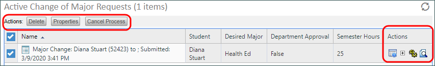
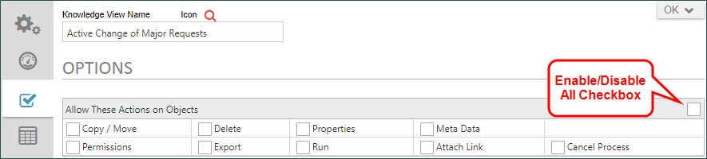
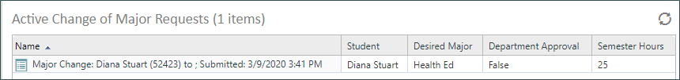

|
|
Lesson Contents | In this Lesson, we will discuss some Best Practices to remember when using Knowledge Views. |
Though our Sample Knowledge View is properly configured to show us the data we want to see, it’s also showing us some other objects that we don’t really want to show to our users. If we run the Knowledge View, we can see a column full of icons that give users access to the Form instance properties, references and other administrative information that we need to hide. In addition, if we click on the checkbox for a Knowledge View row, Delete, Properties, and Cancel Process buttons appear. We really don’t want our end users to do any of those things either. Those need to be hidden as well.

To do so, we’ll open the Knowledge View and navigate to the Options tab. When we looked at this tab previously, we only configured the Return These Object Types section. Now we need to clear all of the checkboxes in the other sections, because those checkboxes specify the icons users see, or the action buttons that get presented to them if they select a Knowledge View row. There are three sections we need to clear before we show this Knowledge View to end users:
We want to disable all of those sections. Luckily, this is easy. On the right side of each section header is a check box to enable or disable the entire section. If we click on it once, all the checkboxes in the section become checked. If we click on it again, all the checkboxes in that section are unchecked. We will disable all three of these sections.

Once we’ve done so, we can run the Knowledge View again, and we see that the column containing the icons has disappeared from the running Knowledge View, as has the selection checkbox for each row. The Knowledge View now only displays the information we want displayed, but users can access any information we don’t want them to, nor can they make any changes to the data. Of course, they can still click on the name of the form instance to open it for review.

When creating Knowledge Views for end users, we want to ensure that we restrict their ability to access anything but the data we intend to display to them.
There are a few other things you need to remember about Knowledge Views.
First, Knowledge Views can be very expensive in terms of system resources. Knowledge Views that have multiple filters that run against both Form and Process Timeline data be complex queries that take a long time to run. Also, when Knowledge View rows are returned, each column has to be filled with data. Sometimes this data is spread across many tables. For some Knowledge Views, it takes a substantial amount of server resources to fill the columns for each row returned. These problems are exacerbated when the KView returns many rows. To avoid this, Knowledge Views default to return a maximum of 100 rows avoid performance issues.
In general, you should structure Knowledge Views to use as few columns and return as few rows as possible to accomplish your purpose. In most cases, there is little to be gained in returning hundreds of rows in a "catch-all" Knowledge View. Such a Knowledge View simply has too much information to be useful in most cases, takes too long to generate, and takes too long for the user to parse through to find specific information.
Finally, you should always return Form Instances with Knowledge Views unless you have a specific reason to return other objects such as Attachments, Timeline Instances, etc. For instance, it might be appropriate to create a Knowledge View that returns Process Timeline instances for use by administrators. Otherwise, though, end users should be limited to seeing Form instances in most cases.
With these best practices in mind, you should be able to create Knowledge Views that are useful and effective for your end users.